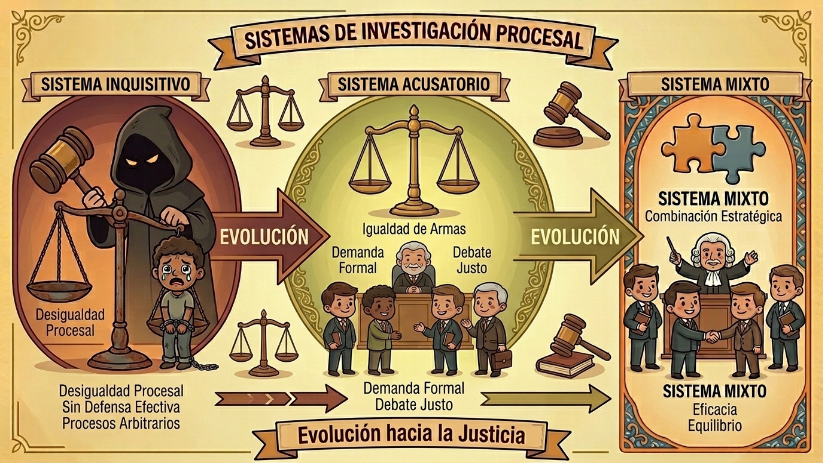

El Derecho, concebido como ciencia, se ramifica en dos dimensiones fundamentales según su aplicación: las Normas Jurídicas Teóricas, que comprenden la teoría pura de la ley, y las Normas Jurídicas Prácticas, encargadas de regular directamente los procedimientos en los tribunales.
Sistemas de Investigación Procesal

Históricamente, la aplicación práctica ha mutado a través de diversos Sistemas de Investigación Procesal (S.I.P.):
Sistema Inquisitivo: Caracterizado por la ausencia de una defensa real; el denunciante y el denunciado se enfrentaban a un proceso donde "no había defensa" efectiva.
Sistema Acusatorio: Basado en la existencia de una demanda formal y un equilibrio de partes.
Sistema Mixto (Evolución): Una combinación estratégica de los dos sistemas anteriores.
El gran hito histórico ocurre en el año 2001, cuando entra formalmente al Ecuador el concepto moderno de Debido Proceso a nivel de procedimiento judicial, cambiando las reglas del juego para siempre.
Las Reglas de la Justicia
¿Qué es realmente el Debido Proceso? No es un concepto abstracto; es la prueba oral de los derechos humanos en el campo de batalla legal. Sus tres pilares prácticos determinan que:
Derecho Universal: Toda persona tiene derecho a la justicia.
Inmediación y Celeridad: Exige juicios rápidos, oportunos y sin dilaciones.
Competencia Integral: Corresponde a toda autoridad administrativa o judicial asegurar estas garantías. Además, toda persona debe tener presencia física para ser juzgada.
Bajo esta luz, la Justicia se define bajo un axioma simple pero poderoso: Dar a quien se lo merece.
Para ejecutarla, el Poder Judicial se organiza jerárquicamente en tres niveles específicos de administración, apoyados directamente por la Fiscalía (según el Art. 76 n.° 3):
1° Nivel: Jueces de primera instancia.
2° Nivel: Jueces de los Tribunales (Cortes Provinciales).
3° Nivel: Ministros Jueces (Corte Nacional).